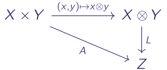
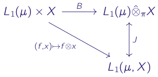
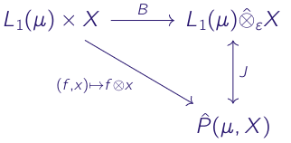

The Projective and Injective Tensor Products of Banach Spaces
This post was written as a way to collect my thoughts for a poster presentation in the In-House Mathematics Symposium held at IISER Bhopal on 31st October and 1st November 2026. The accompanying poster is here.
The Algebraic Tensor Product
The algebraic tensor product answers the question: Given two vector spaces \(X\) and \(Y\), is there a way to 'linearize' bilinear mappings on the Cartesian product \(X \times Y\)? It turns out that there is a unique (up to isomorphism) vector space \(X \otimes Y\) and a unique map \(B \colon X \times Y \to X \otimes Y\) with the property that every bilinear mapping factors through \(X \otimes Y\) as a linear map. We call this space the algebraic tensor product of \(X\) and \(Y\).

This means there are multiple, equivalent, ways to view elements of the algebraic tensor product. One possibility is to view them as equivalence classes under a suitably chosen equivalence relation on \(X \times Y\). We may also view them as functionals on the space \(B(X\times Y)\) of all bilinear forms on \(X \times Y\), or as bilinear forms on the space \(X^\sharp \times Y^\sharp\) where \(X^\sharp\) and \(Y^\sharp\) are the algebraic dual spaces.
In this post, we choose to view the tensor product as a subspace of \(B(X^\sharp \times Y^\sharp)\), the space of bilinear forms on \(X^\sharp \times Y^\sharp\). For fixed \(x \in X\) and \(y \in Y\), we define the elementary tensor \(x \otimes y \in B(X^\sharp \times Y^\sharp)\) as:
\[ (x \otimes y) (A_1, A_2) \coloneqq A_1(x)A_2(y).\]
We then construct \(X\otimes Y\) as the linear span of all elementary tensors. Thus \(X \otimes Y\) is a subspace of \(B(X^\sharp \times Y^\sharp)\). It should be noted, however, that given any element \( u \in X \otimes Y\), there may be multiple ways to express \(u\) as a sum of elementary tensors. For instance, it can be seen that \(x \otimes y = \frac{x}{2}\otimes y + x \otimes \frac{y}{2}\).
Reasonable Crossnorms
We now specialise to the situation when \(X\) and \(Y\) are Banach spaces. Can we to endow the algebraic tensor product \(X \otimes Y\) with a so-called 'reasonable' norm that plays well with the norms on \(X\) and \(Y\)? Perhaps \(X \otimes Y\) can also be given a Banach space structure?
We first need to define a notion of 'reasonable'. There are two properties that we find desirable &mdash the norm of elementary tensors should be bounded by the norms of the individual vectors in \(X\) and \(Y\), and the functionals on \(X\otimes Y\) arising from bounded (i.e. continuous) linear functionals on \(X\) and \(Y\) should also be bounded. The following definition formalises this idea.
Reasonable crossnorm:
A norm, \(\alpha\), on \(X\otimes Y\) is a reasonable crossnorm if the following hold
- For every \(x \in X\) and \(y \in Y\), we have \(\alpha(x \otimes y) \leq \|x\|\|y\|\), and
- For every \(A_1 \in X^*\) and \(A_2 \in Y^*\), the linear functional \(A_1 \otimes A_2\) is bounded, with \(\|A_1 \otimes A_2\| \leq \|A_1\| \|A_2\|\).
This leads to there being multiple norms in which \(X \otimes Y\) can be extended to become a Banach space. The projective and injective norms are two such norms.
The Projective Tensor Product
We now attempt to construct the largest 'reasonable' norm on \(X \otimes Y\). To do so, we exploit the triangle inequality (which every norm must satisfy), and property (1) of any reasonable crossnorm (which every 'reasonable' norm is).
Let \(\alpha\) be a 'reasonable' norm on \(X \otimes Y\). Fix some \(u \in X \otimes Y\). Suppose \(u = \sum_{i=1}^n x_i \otimes y_i\) is one representation of \(u\). Then the triangle inequality and property (1) of reasonable crossnorms imply \(\alpha(u) \leq \sum_{i=1}^n \|x_i\| \|y_i\|\). Moreover, this inequality holds for every representation of \(u\). Consequently, \(\alpha(u)\) is a lower bound for the set \(S_u = \left\{ \sum_{i=1}^n \|x_i\| \|y_i\| \mid u = \sum_{i=1}^n x_i \otimes y_i \right\}\) for every \(u \in X\otimes Y\), and 'reasonable' norm \(\alpha\) on \(X \otimes Y\).
Now consider the function \(\pi \colon X \otimes Y \to \mathbb{R}\) defined as \(\pi(u) = \inf \left\{ \sum_{i=1}^n \|x_i\| \|y_i\| \mid u = \sum_{i=1}^n x_i \otimes y_i \right\}\), where the infimum is taken over all representations of the tensor \(u\). It turns out that \(\pi\) is a 'reasonable' norm on \(X \otimes Y\). Since the infimum is the greatest lower bound, \(\pi\) is the largest such norm.
We call the completion under this norm the projective tensor product, and denote it by \(X \hat{\otimes}_\pi Y\).
Another useful property is that the projective tensor product linearizes bounded bilinear mappings, in the same way the algebraic tensor product linearizes bilinear mappings.
The Injective Tensor Product
The injective tensor product lies at the other end, it is the smallest 'reasonable' norm on \(X \otimes Y\). To see how it comes to be, we use the fact that the closed unit ball of the dual space in the operator topology is a norming set.
Let \(\alpha\) be a 'reasonable' norm on \(X \otimes Y\). Fix some \(u \in X \otimes Y\). Suppose \(u = \sum_{i=1}^n x_i \otimes y_i\) is one representation of \(u\). From the norming property, we have
\[ \alpha(u) = \sup \{|A(u)| \mid A \text{ is a bounded linear operator on } X \otimes Y \text{ with } \|A\| \leq 1\}.\]
From property (2) of reasonable crossnorms, given any \(A_1 \in X^*\) and \(A_2 \in Y^*\) such that \(\|A_1\|, \|A_2\| \leq 1\), we have \(\|A_1 \otimes A_2 \in (X \otimes Y)^*\), and \(\|A_1 \otimes A_2\| \leq 1\). It follows that \(\alpha(u)\) is an upper bound for the set \(M_u = \left\{\left|(A_1\otimes A_2)(u) = \sum_{i=1}^n A_1(x_i) A_2(y_i) \right| \mid A_1 \in X^* \text{ and } A_2 \in Y^*\right\}\), for every \(u \in X\otimes Y\), and 'reasonable' norm \(\alpha\) on \(X \otimes Y\).
Like in the previous section, we define the function \(\varepsilon \colon X \otimes Y \to \mathbb{R}\) by \(\varepsilon(u) = \sup \left\{ \left|\sum_{i=1}^n A_1(x_i)A_2(y_i)\right| \mid A_1 \in B_{X^*}, A_2 \in B_{Y^*} \right\}\). Again, it turns out that \(\varepsilon\) is a 'reasonable' norm on \(X \otimes Y\). From the least upper bound property, it follows that \(\varepsilon\) is the smallest such norm.
We call the completion under this norm the injective tensor product, and denote it by \(X \hat{\otimes}_\varepsilon Y\).
An interesting observation is that \(\varepsilon(u)\) is precisely the operator norm of the tensor \(u\), when it is viewed as a bilinear form on \(X^* \times Y^*\).
The Bochner Integral
This section is intended to be a crash-course on the Bochner integral, and introduces the theory in the limited context of using tensor products to simplify the spaces of Bochner integrable functions.
The Bochner integral strongly mirrors the Lebesgue integral. Let \((\Omega, \Sigma, \mu)\) be a measure space. A Banach space valued function \(f\) is a \(\mu\)-measurable simple function if it can be written as \(f = \sum_{i=1}^n \chi_{A_i}x_i\), where \(x_i \in X\), and \(A_i \in \Sigma\). The \emph{Bochner integral over a measurable set \(E\)}, \(\int_E f d\mu\), for such functions is then defined as: \[ \int_E f d\mu \coloneq \sum_{i=1}^n \mu(A_i \cap E) x_i. \] Like in Lebesgue integration, a \(\mu\)-measurable function \(f\) is Bochner integrable if there is a sequence \(f_n\) converging almost everywhere to \(f\) such that \(\lim_{n \to \infty} \int_\Omega \|f -f_n\| d\mu =0\). In this case, we define \(\int_E f d\mu = \lim_{n \to \infty} \int_E f_n d\mu\).
Continuing the parallels with Lebesgue integration theory, we define the Lebesgue-Bochner space as the space of equivalence classes of Bochner integrable functions (where the equivalence relation is functions being equal almost everywhere), and denote it by \(L_1(\mu,X)\). It can be shown that \(L_1(\mu,X)\) with the norm \(\|f\|_1 = \int_\Omega \|f\| d\mu\) is complete, and so is a Banach space.
Proposition: There is an isometric isomorphism \(L_1(\mu) \hat{\otimes}_\pi X \simeq L_1(\mu,X)\).

We define a bounded bilinear map from \(L_1(\mu) \times X\) to \(L_1(\mu,X\) by \((f,x) \mapsto g\) where \(g\) is given by \(g(\omega) = f(\omega) x\). The linearization of this map under the projective tensor product turns to be an isometric isomorphism.
Similar identifications can be made for the Bochner integrable \(L_p(\mu,X\)\) spaces where \(1 < p < \infty\).
The Pettis Integral
This section too is intended to be a crash-course on the Pettis integral, and introduces the theory in the limited context of using tensor products to simplify the space of \(\mu\)-measurable Pettis integrable functions.
The Pettis integral is a weak extension of the Bochner integral. The theory can, in general, be defined for arbitrary measure space. However, density arguments become simpler in the case of finite measure spaces, and we restrict ourselves to these. Let \((\Omega, \Sigma, \mu)\) be a finite measure space, and \(f \colon \Omega \to X\) be a Banach space valued function.
A function \(f\) is \emph{weakly \(\mu\)-measurable} if \(A \circ f\) is \(\mu\)-measurable for every \(A \in X^*\).
In a similar fashion, we say a weakly \(\mu\)-measurable function is \emph{weakly integrable} if \(A \circ f\) is integrable for every \(A \in X^*\).
For a weakly \(\mu\)-integrable function \(f\), we define a bounded linear operator \(S \colon X^* \to L_1(\mu)\) as \(A \mapsto A \circ f\). Now, the adjoint \(S^* \colon L_{\infty}(\mu) \to X^{**}\) is such that, for any \(g \in L_{\infty}(\mu)\), we have \( (S^* g)(A) = \int_\Omega (g)(A\circ f) d\mu\) where \(A \in X^*\).
If the adjoint takes values in \(X\) (when embedded into \(X^{**}\)), \(f\) is \emph{Pettis integrable}, and the Pettis integral over \(E\) is the image of \(\chi_E\) under \(S^*\).
This motivates a definition for a candidate Pettis norm. We define the Pettis norm associated with \(f\) to be the operator norms of \(S\), and its adjoint \(T\).
\[
\begin{align}
|f|_1 &= \sup_{A \in B_{X^*}} \left\{ \int_\Omega |A \circ f| d\mu \right\}\\
&= \sup_{ g \in B_{L_\infty(\mu)}} \left\{ \left\| \int_\Omega g \cdot f \right\| \right\}.
\end{align}\]
Note that, at this point, is not an actual norm on all weakly \(\mu\)-measurable functions that are Pettis integrable.
The Pettis integral has some peculiar properties. For instance, there exist weakly \(\mu\)-measurable functions that are non-zero everywhere, but with Pettis integral zero. Restricting ourselves to \(mu\) measurable, Pettis integrable function fixes this issue. Moreover, the Pettis norm defines a norm on the space of equivalence classes of such functions, \(P_1(\mu,X)\).
The Pettis norm, given by defines a norm on the space \(P_1(\mu,X)\) of equivalence classes of \(\mu\)-measurable Pettis integrable functions. However, unlike the Bochner integral case, this space need not be complete. We denote its completion by \(\hat{P}_1(\mu,X)\). Moreover, finiteness of the measure \(\mu\) means that the \(\mu\)-measurable simple functions are dense in \(\hat{P}_1(\mu,X)\).
Proposition: There is an isometric isomorphism \(L_1(\mu) \hat{\otimes}_\varepsilon X \simeq \hat{P}_1(\mu,X)\).

The proof follows the same idea as in the previous section, the linearization is an isometry, and the density of \(\mu\)-measurable simple functions in \(\hat{P}_1(\mu,X)\) extends it to an isomorphism.
It follows from the definition that every Bochner integrable simple function is also Pettis integrable, with the same value for the two integrals. Consequently, the same holds for every Bochner integrable function.
However, there exist Pettis integrable functions that are not Bochner integrable. The standard example is to consider the Lebesgue measure on \([0,1]\), and the Banach space \(c_0\). For each \(n \in \mathbb{N}\), let \(I_n\) be the interval \(\left( \frac{1}{n+1}, \frac{1}/n \right]\). Define \(f \colon [0,1] \to c_0\) by \(f(t)=\left(n \chi_{I_n}(t)\right)\). Then \(f\) is Pettis integrable with the Pettis integral \(\left( \frac{1}{n+1}\right) \in c_0\). However, \(f\) is a Lebesgue measurable function with \( \|f\| \notin L_1(\mu)\). This means \(f\) is not Bochner integrable.
Corrections:
None yet, let me know if you spot any mistake!
Acknowledgements:
This post is based on a part of my BS-MS thesis project, supervised by Dr. Amudhan Krishnaswamy-Usha. Most of this post follows Raymond Ryan's text, Introduction to Tensor Products of Banach Spaces. Parts of Analysis in Banach Spaces: Volume I: Martingales and Littlewood-Paley Theory by Tuomas Hytönen, Jan van Neerven, Mark Veraar and Lutz Weis was also used.